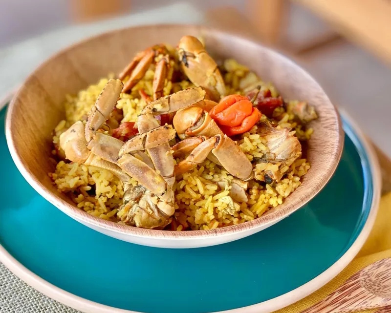

Le Matété de Crabe
Véritable rituel culinaire et social, le matété de crabe est le plat roi des célébrations de Pâques et de la Pentecôte en Guadeloupe. Ce ragoût festif et convivial réunit les familles sur les plages ou dans les jardins autour d'un savoir-faire ancestral.
Il se compose de crabes de terre savoureusement épicés et mijotés, traditionnellement mélangés à un riz qui cuit lentement à l'étouffée dans le jus aromatique des crustacés, s'imprégnant ainsi de toutes leurs saveurs complexes.
Le rituel et le secret du Matété
L'histoire du matété commence plusieurs semaines avant les fêtes avec la fameuse "chasse aux crabes". À l'aide de ratières (boîtes en bois artisanales), les Guadeloupéens capturent les crabes de terre gris. Ces derniers sont ensuite nourris et "purgés" à la maison avec du maïs, du piment, des herbes et des feuilles de patate douce pour purifier leur chair et leur donner un goût unique.
Le secret d'un matété réussi réside dans le brossage minutieux des crabes et l'assaisonnement de leur carapace. On prépare une base intense (le roussi) avec des cives (oignons pays), de l'ail, du thym, du persil, du piment fort, des clous de girofle et parfois un morceau de lard fumé.
Une fois les crabes bien dorés et imprégnés des épices, on ajoute le riz directement dans la marmite en fonte. La cuisson se fait à couvert et à feu doux : le riz doit absorber entièrement le bouillon parfumé tout en restant parfaitement grainé, offrant une explosion de saveurs typiquement antillaises.